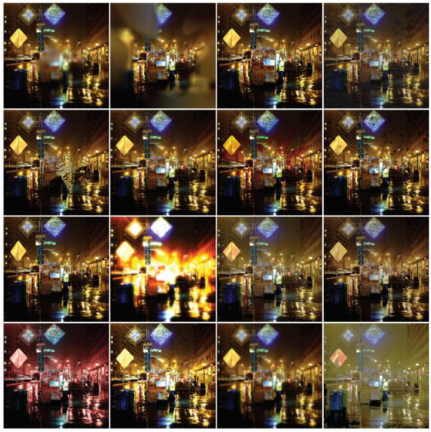

فهم ضعف البصر
ما هو ضعف البصر؟

ضعف البصر (أو الرؤية الجزئية) هو حالة بصرية لا يمكن تصحيحها بالكامل بالنظارات الطبية أو العدسات اللاصقة أو الأدوية أو الجراحة. يختلف ضعف البصر من شخص لآخر، حيث قد يعاني البعض من ضبابية الرؤية، بينما يفقد آخرون الرؤية المحيطية أو المركزية.
أنواع ضعف البصر الشائعة
- فقدان الرؤية المركزية: صعوبة في رؤية التفاصيل الدقيقة في منتصف مجال الرؤية.
- فقدان الرؤية المحيطية: المعروف أيضاً باسم "رؤية النفق"، حيث يرى الشخص فقط ما هو أمامه مباشرة.
- الرؤية الضبابية: تبدو الأشياء غير واضحة أو خارج التركيز في كامل مجال الرؤية.
- حساسية الضوء الشديدة: الشعور بالألم أو عدم الراحة عند التعرض لمستويات عادية من الضوء.
كيف نرى العالم؟
من المهم أن نفهم أن ضعف البصر ليس مجرد "عدم رؤية"، بل هو تجربة بصرية مختلفة. بعض الأشخاص يحتاجون إلى إضاءة قوية جداً، بينما يفضل آخرون التباين العالي والإضاءة الخافتة لتقليل الوهج.